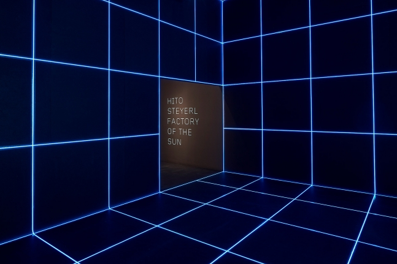

Hito Steyerl (born 1966 in Munich, Germany) is a filmmaker, visual artist, writer, and innovator of the essay documentary. Her prolific filmmaking and writing occupies a highly discursive position between the fields of art, philosophy and politics, constituting a deep exploration of late capitalism's social, cultural and financial imaginaries. Her films and lectures have increasingly addressed the presentational context of art, while her writing has circulated widely through publication in both academic and art journals, often online. She studied Documentary Film Directing Japan Institute of the Moving Image and at the HFF - University of Television and Film in Munich. She subsequently studied Philosophy at the Academy of the Arts in Vienna, where she received her doctorate. She is Professor for Experimental Film and Video at the UdK - University of the Arts, Berlin, where she founded the Research Center for Proxy Politics together with Vera Tollmann and Boaz Levin. She has had solo exhibitions at K21, Düsseldorf (2020), Art Gallery of Ontario, Toronto, the Park Avenue Armory, New York, Serpentine Galleries, London (2019); Kunstmuseum, Basel, Castello di Rivoli, Turin (2018); The Institute of Contemporary Art, Boston (2017); the Museum of Contemporary Art, Los Angeles (2016); Museo Nacional Centro de Arte Reina Sofia, Madrid, Spain; Artists Space, New York; Institute of Modern Art, Brisbane, Australia (2015); Van Abbemuseum, Eidenhoven, The Netherlands; ICA, London, UK; Künstlerhaus Stuttgart, Germany (2014); Museum of Contemporary Art Chicago (2013); the Art Institute of Chicago; E-flux, New York (2012); Chisenhale Gallery, London, UK (2010); Neuer Berliner Kunstverein (2009); and Moderna Museet, Stockholm (2008). A selection of her essays, published in various places, are summarized in four books: Die Farbe der Wahrheit (The Color of Truth; Vienna: Turia Kant, 2008), The Wretched of the Screen (Berlin: Sternberg Press, 2012), Beyond Representation (Berlin 2016), and Duty Free Art - Art in the Age of Planetary Civil Wars (London: Verso, 2017 / Zurich: Diaphanes, 2018). Steyerl lives and works in Berlin.
